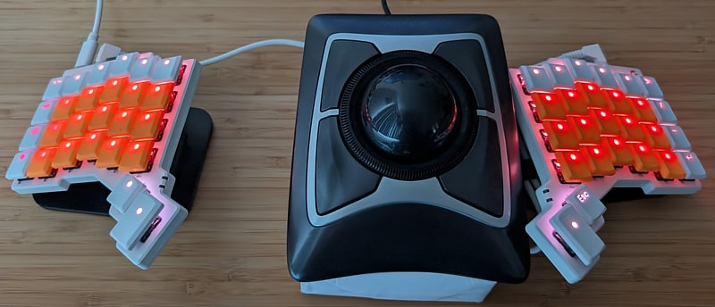

Keyboards
Pascal Getreuer

Quantum Mechanical Keyboard (QMK) is a popular open source firmware for custom keyboards. Who knew a keyboard could do so much?
See my keymap on GitHub. Please feel free to open an issue or start a discussion about any problems, questions, or comments.
General
Alt keyboard layouts – switching from QWERTY to an alternative keyboard layout
Designing a symbol layer – ergonomic and character frequency considerations
PSA: Thumbs can get overuse injuries – anecdotes, common injuries, countermeasures
Questioning the ergonomics of 40% keyboards – smaller ≠ better
Vial
- Guide to Vial firmware – first-time use, customization, development
QMK modules
Custom shift keys – they’re surprisingly tricky to get right; here is my approach
Cyclotab – a swapper implementation for easier Alt+Tabbing
Lumino – a minimal, opinionated control scheme for RGB matrix lighting
Mouse Turbo Click – macro that clicks the mouse rapidly
Orbital Mouse – a polar approach to mouse key control
PaletteFx – palette-based RGB matrix lighting effects
Select Word – macro for convenient word or line selection
Sentence Case – automatically capitalize the first letter of sentences
SOCD Cleaner – enhance WASD for fast inputs for gaming
The following were originally developed here and have since graduated to become QMK core features. It is recommended to use the QMK core implementations, but (perhaps for sake of customization or curiosity) you may continue to use these userspace versions:
Achordion – userspace predecessor of QMK’s Chordal Hold
Autocorrection – userspace version of QMK’s Autocorrect
Caps Word – userspace version of QMK’s Caps Word
Layer Lock key – userspace version of QMK’s Layer Lock
Repeat Key – userspace version of QMK’s Repeat Key
Speculative Hold – userspace version of QMK’s Speculative Hold
Tap Flow – userspace predecessor of QMK’s Flow Tap
QMK
QMK Community Modules – reduce the friction to add third-party features
Typing non-English letters – several approaches to type symbols like ä, ç, λ
QMK song player – play QMK song code in your browser
QMK macros series – typing shortcuts, adaptive behaviors, timing effects, and more
Developing QMK features – userspace libraries and contributing to QMK
- Keycode String – format keycodes as human-readable strings
Reference
Keyboard FAQs – thoughts on topics that come up regularly
Glossary – keyboard-related slang, technical jargon, and anatomical terms
Links about keyboards – interesting links about keyboards and related topics